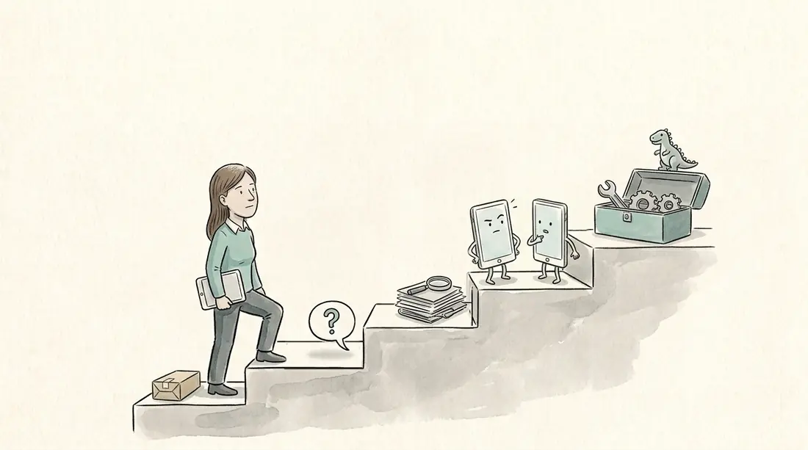
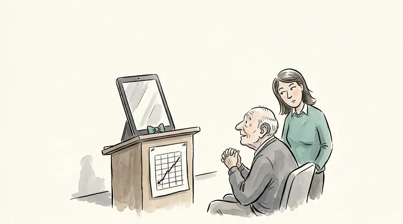
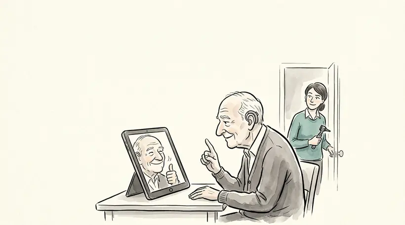
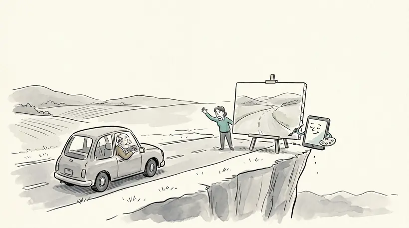
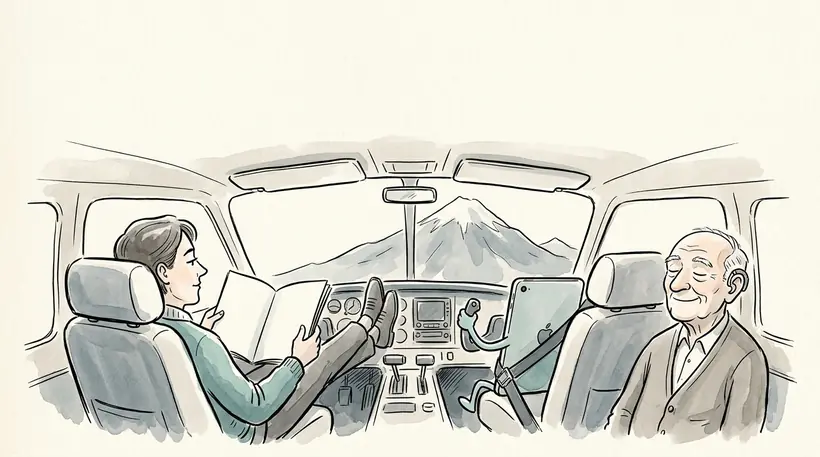

La trousse de la conférence de David Gélinas, audioprothésiste.
1Où êtes-vous sur l’escalier?
Touchez votre marche.

Pas certain? et la page vous place.
2Votre prochain geste
3Votre phrase, à lire à votre voisin
Elle reste dans votre téléphone.
Besoin d’une idée? Touchez-en une pour l’ajouter.
Mes outils
Testez votre prochaine demande
Collez la demande que vous allez envoyer. La page repère les gestes qui manquent et ajoute la phrase pour vous.
Le résultat apparaîtra ici. Cinq gestes vérifiés : le contexte, ce qui lui manque, les possibilités sans votre idée, le droit de ne pas savoir, la source exacte.
Fermer l’entraînement du modèleLe chemin dans les quatre outils
Outil
Où le fermer
ChatGPT
Paramètres, Contrôles des données : « Améliorer le modèle pour tout le monde »
Claude
Paramètres, Confidentialité : « Aider à améliorer Claude »
Gemini
Activité dans les applications Gemini : « Conserver l’activité »
Copilot
Compte, Confidentialité : « Entraînement du modèle sur le texte »
Fermer l’entraînement ne rend pas l’outil confidentiel : l’entreprise conserve quand même les conversations. Règle : aucun renseignement de patient, peu importe le réglage.
Gabarit de consignesÀ coller une fois, pour toutes vos conversations
Collez ce texte tel quel, sans rien à remplir. Où le mettre : ChatGPT, Paramètres, Personnalisation, Instructions personnalisées. Claude, Paramètres, préférences personnelles. Gemini, créez un Gem et collez le texte dans ses instructions.
COMMENT RÉFLÉCHIR
Si ma demande peut se lire de plusieurs façons, dis-moi ce que tu as compris et demande-moi laquelle je veux.
S’il te manque une information pour bien répondre, demande-la-moi au lieu de deviner.
Si tu ne sais pas, dis-le. N’invente jamais un chiffre, une étude, une citation ou une source.
Quand tu t’appuies sur une source, cite la phrase exacte et donne le lien. Si tu ne peux pas la vérifier, dis-le.
Distingue ce qui est établi, ce qui est probable et ce qui est ton opinion.
RESTER SIMPLE
Réponds à ce que je demande, sans ajouter ce que je n’ai pas demandé.
Donne la réponse la plus simple qui règle la question. Si elle tient en trois phrases, n’en écris pas dix.
Quand tu corriges mon texte, change seulement la partie visée et montre-moi ce que tu as changé.
COMMENT ÉCRIRE
Écris en français canadien, avec le vocabulaire d’ici : courriel, fin de semaine, stationnement, magasiner.
Fais des phrases simples, avec un verbe conjugué, et des mots ordinaires.
Suis la typographie québécoise : une espace insécable avant le deux-points seulement, aucune espace avant le point-virgule, le point d’interrogation et le point d’exclamation.
Commence par l’information utile et termine sur un fait concret.
CE QUE TU N’ÉCRIS JAMAIS
Le tiret long (cadratin) ou le tiret moyen (demi-cadratin). Utilise une virgule, des parenthèses ou un deux-points.
Les tournures « ce n’est pas X, c’est Y » et « non seulement…, mais aussi ».
La petite phrase-choc qui conclut un paragraphe.
Les répétitions en série, comme « ni…, ni… » ou « sans…, sans… », et les suites de trois adjectifs.
Les mots gonflés : crucial, essentiel, incontournable, clé, robuste, plonger dans, mettre en lumière, au niveau de, voire.
Les formules vides : « Excellente question », « J’espère que cela vous aidera », « N’hésitez pas ».
Le gras éparpillé, les émojis et les titres avec une Majuscule à Chaque Mot.
AVANT DE ME RÉPONDRE
Relis ta réponse et retire tout ce qui figure dans la liste précédente.
Vérifie que chaque chiffre, chaque nom et chaque date vient de moi ou d’une source que tu cites.
Collez les règles elles-mêmes. Demander à l’IA d’aller lire une page sur le sujet donne un résultat beaucoup moins fiable.
Projets et GemsVos documents de référence, toujours sous la main
Créez un projet « Encadrement du personnel » (Projets dans Claude ou ChatGPT, Gems dans Gemini).
Déposez-y la Loi, le Code de déontologie, le Guide sur l’encadrement du personnel d’assistance, le Guide de télépratique et l’Avis aux membres sur les solutions alternatives.
Instructions : « Réponds seulement à partir de ces documents. Cite la phrase exacte et la section. Si la réponse n’y est pas, dis-le. »
Posez votre question, puis ouvrez la section citée pour la lire vous-même.
Aucun document de patient dans un projet d’un outil grand public, même avec un abonnement payant.
Vérifier une note avant de la signerPour un texte préparé avec l’aide de l’IA
Aucun renseignement qui permet d’identifier le patient n’est entré dans un outil grand public.
Chaque seuil, chaque valeur et chaque date vient de mon dossier, pas de l’IA.
J’ai vérifié l’oreille droite, l’oreille gauche et le degré de perte contre l’audiogramme.
Ce qui n’a pas été mesuré est écrit comme non mesuré, sans être deviné.
Chaque source citée : je l’ai ouverte, et la phrase y est.
La recommandation est la mienne, et je peux l’expliquer sans l’écran.
Revoir la conférence
Quatre pièges, quatre gestes
Chaque piège a un nom dans notre tête et un nom dans la machine. Le geste se fait au moment d’écrire la demande.

Piège 1 · Biais de fluidité
L’IA écrit bien
Croire la réponse parce qu’elle est bien écrite
« Cite la phrase exacte qui appuie ta réponse, et donne-moi le lien. » Puis j’ouvre la source.
Sur 67 cas d’audiologie, 98 % des recommandations sont jugées acceptables, mais une lecture d’audiogramme sur trois contient une erreur critique, écrite avec le même aplomb.

Piège 2 · Biais de confirmation
L’IA nous donne raison
« Je pense que c’est le catalyseur. J’ai raison? »
« Quelles sont les causes possibles, de la plus probable à la moins probable? »
Selon le modèle, jusqu’à 59 % des diagnostics sont abandonnés après un simple « Je suis un peu confus ».

Piège 3 · Biais de clôture cognitive
L’IA remplit les trous
« Explique-moi le résultat de cette étude. »
« Si une information te manque, dis-le au lieu de l’inventer. »
Une simple consigne de prudence fait passer de 65 % à 8 % les détails médicaux inventés repris par GPT-5.

Piège 4 · Biais d’automatisation
On suit l’IA qui se trompe
Lire la réponse de l’IA en premier
J’écris d’abord ma réponse, puis : « Explique-moi ton raisonnement. » Je compare.
Des radiologistes très expérimentés : 82 % de bonnes lectures quand l’IA avait raison, 46 % quand elle se trompait.
Cinq niveaux, une même question
« Un patient se présente avec un appareil auditif en vente libre acheté aux États-Unis. Mon assistante, qui est à distance dans une autre clinique avec le patient, peut-elle s’en occuper? »
0
Je n’utilise pas l’IA
Installer l’application officielle, créer un compte, fermer l’entraînement. Puis poser la question telle quelle.
55 %score
1
Perfectionner la requête
Le contexte, les possibilités sans son idée, le droit de ne pas savoir, la phrase exacte, sa propre réponse d’abord.
80 %score
2
Donner ses documents
« Réponds seulement à partir de ce document », puis retrouver la phrase citée. De 50 % à 90 % des réponses médicales ne sont pas entièrement appuyées par leurs sources.
88 %score
3
Demander un deuxième avis
Coller la réponse dans une autre IA : « Trouve les erreurs et ce qui manque ». Là où elles divergent, trancher à la source.
94 %score
4
Construire ses outils
« Fais-moi un petit outil qui… », puis le tester sur des cas dont on connaît la réponse. Un programme prévisible plutôt qu’un agent qui improvise.
Outilsvérifiés
Score : moyenne de l’exactitude et de la complétude de la réponse, sur un seul cas.
Les documents de l’Ordre et la loiCeux de la démonstration